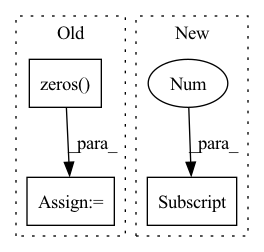

Pattern ID :18

Before Change
kv = torch.cat((x, mem, keys))
attn_shape = (t, kv.shape[0])
attn_mask = torch.zeros(*attn_shape, device=x.device)
if self.causal:
i, j = torch.triu_indices(t, t, 1)
attn_mask[i, j] = float("-inf")
After Change
self.causal = causal
def forward(self, qk, v, query_len = None):
query_len = default(query_len, qk.shape[1])
t = query_len
q = qk[:, 0:query_len]
In pattern: SUPERPATTERN
Frequency: 3
Non-data size: 3
Instances
Fragment ID: 35731
Project Name: lucidrains/reformer-pytorch
Commit Name: d2462f9b33944e20f5fbeaf19efaa9591378ba65
Time: 2020-01-28
Author: lucidrains@gmail.com
File Name: reformer_pytorch/reformer_pytorch.py
M Class Name: SelfAttention
N Class Name: FullQKAttention
M Method Name: forward(4)
N Method Name: forward(3)
M Parent Class: nn.Module
N Parent Class: nn.Module
M File Name: reformer_pytorch/reformer_pytorch.py
N File Name: reformer_pytorch/reformer_pytorch.py
M Start Line: 386
M End Line: 403
N Start Line: 330
N End Line: 349
'>
Before Change
enc_h, (h, c) = self.Encoder(embed_enc_inputs, None)
ref = enc_h
query = h.permute(1,0,2).to(device)// query = self.dec_input.unsqueeze(0).repeat(batch,1).unsqueeze(1).to(device)
process_h, process_c = [torch.zeros((1, batch, embed), device = device) for _ in range(2)]
for i in range(self.n_process):
query, (process_h, process_c) = self.Decoder(query, (process_h, process_c))
query = query.squeeze(1)
After Change
enc_h, (h, c) = self.Encoder(embed_enc_inputs, None)
ref = enc_h
// ~ query = h.permute(1,0,2).to(device)// query = self.dec_input.unsqueeze(0).repeat(batch,1).unsqueeze(1).to(device)
query = h[-1]
// ~ process_h, process_c = [torch.zeros((1, batch, embed), device = device) for _ in range(2)]
for i in range(self.n_process):
// ~ _, (process_h, process_c) = self.Decoder(query, (process_h, process_c))
// ~ _, (h, c) = self.Decoder(query, (h, c))
'>
Fragment ID: 35733
Project Name: rintarooo/tsp_drl_ptrnet
Commit Name: 6e79534a9be0ef30e0f97fcccf1addf22312462c
Time: 2020-11-12
Author: 310rnomeado@gmail.com
File Name: critic.py
M Class Name: PtrNet2
N Class Name: PtrNet2
M Method Name: forward(3)
N Method Name: forward(3)
M Parent Class: nn.Module
N Parent Class: nn.Module
M File Name: critic.py
N File Name: critic.py
M Start Line: 41
M End Line: 51
N Start Line: 45
N End Line: 45
'>
Before Change
values, indices = torch.topk(R, self.n_sortcut)
values = values.reshape(bh, self.n_sortcut, -1)
indices = indices.reshape(bh, self.n_sortcut, -1)
R = torch.zeros(bh, self.n_sortcut, buckets, device=device, dtype=dtype).scatter(2, indices, values)
return R.softmax(dim=-1) if self.non_permutative else gumbel_sinkhorn(F.relu(R), self.sinkhorn_iter, self.temperature)
After Change
bh, *_, bucket_size, kv_bucket_size, device, dtype, dim = *q.shape, self.bucket_size, self.kv_bucket_size, q.device, q.dtype, self.dim
b = bh // self.heads
buckets = q.shape[1] // bucket_size
kv_buckets = k.shape[1] // kv_bucket_size
b_q = bucket(buckets, q) if self.n_sortcut == 0 else bucket(1, q)
'>
Fragment ID: 35734
Project Name: lucidrains/sinkhorn-transformer
Commit Name: 661c2edf85ed877510c714a024b5332299a4ee00
Time: 2020-05-14
Author: lucidrains@gmail.com
File Name: sinkhorn_transformer/sinkhorn_transformer.py
M Class Name: AttentionSortNet
N Class Name: AttentionSortNet
M Method Name: forward(4)
N Method Name: forward(3)
M Parent Class: nn.Module
N Parent Class: nn.Module
M File Name: sinkhorn_transformer/sinkhorn_transformer.py
N File Name: sinkhorn_transformer/sinkhorn_transformer.py
M Start Line: 370
M End Line: 386
N Start Line: 383
N End Line: 402